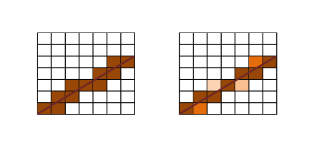
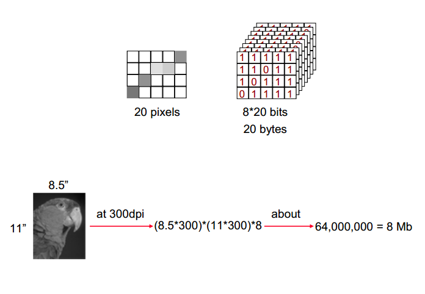
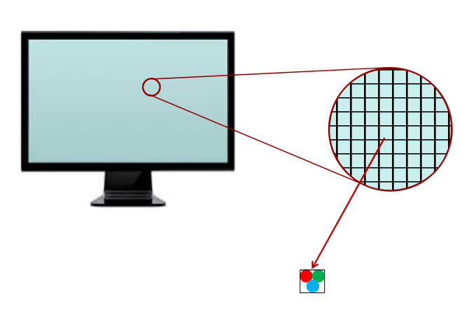
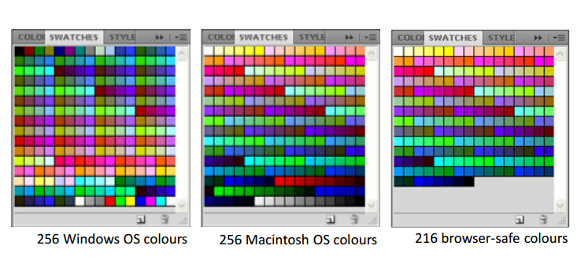

What's the Image?
In typesetting by hand compositing, a sort or type is a piece of type representing a particular letter or symbol, cast from a matrix mould and assembled with other sorts bearing additional letters into lines of type to make up a form from which a page is printed.
Vector And Raster Images
There are two basic types of computer images.
- - Vector images
- - Raster images
Vector images creating using such as adobe allustrator consist of individual objects and each object has it's own attributes (shape, color, placement, size)
Raster images creating using such as adobe allustrator consist of individual points (pixels) ,each pixel has it's own attributes such as color, placement. Vector images are converted to raster images before they are displayed on a computer screen or printed
Anti-Aliasing
Anti-aliasing is the process of coloring each pixel with a difference tone of it's color, proportion to it's area of intersection with the pixel area that is created when you add the layer mask.
 
Greyscale Images
Greyscale Images may contain over 200 diferent tones of grey.
- - With less than 200 tones of grey, images will not look continuous
- - Bandnig or shade-stepping occurs when we can see different bands of lighter and darker grey
Color Images
Color Images refers to the number of bits per pixel such as high color (16 bits) and true color (24 bits). the higher color depth the larger images size. The color reduction is the process of reducing the color depth to reduce the image size from 16 to 8 bit (256 colors). Dithering is the process of simulating colors that are not available. Dithering can improve the quality of color reduced images.
- - few available colors are put next to each other
- - our eyes perceive the missing color
Limited but selective color can be used to further improve the quality of low depth images. System color palettes such as window, mobile device and Macromedia. Window color palettes (browser safe color) and custom color palettes depend on how used in the images

Raster Images Channels And Layers
Raster Images are generally a collection of channels are like simnple images. One channel for each of the primary colors. There are also be addittion channels
- - alpha channel for transparently
- - Z-depth channel for determining the relative distance of each pixel from a fixed location
- - user defined channels such as selection paths
Image File Formats
There are two main groups of file formats
- - Vector image file format
- - Raster image file format
Vector image file format store the image as a set of individual objects (object-based). Smaller file size. Raster image file format store the image as a set of individual pixels (bitmal). larger file size. Raster image file formats often rely on compression techniques to reduce their size. Lossless compression techniques compress images without discarding any image data. Lossy compression techniques discard some image data to reduce file size

Raster Image File Format For The Web
Graphic Intercharge Format (GIF)
- - Limited color palette (256 color, 8 bit)
- - allows transparents for specified color
- - allows animation by iterating though images
Portable Network Graphic (PNG)
- - Can be either 8 bits (limited colors) or 24 bits
- - 8 bits version allows transparency similar to GIF
- - 24 bit version allow transparency using alpha channel
Joint Photographic Experts Group (JPEG)
- - Provides different levels of compression
- - allows small size for true color images
- - no limit on the number of color
Image File Formats
There are two main groups of file formats
- - Vector image file format
- - Raster image file format
Vector image file format store the image as a set of individual objects (object-based). Smaller file size. Raster image file format store the image as a set of individual pixels (bitmal). larger file size. Raster image file formats often rely on compression techniques to reduce their size. Lossless compression techniques compress images without discarding any image data. Lossy compression techniques discard some image data to reduce file size
Use of images in web pages
Use of images in web pages
HTML used to have limited support for inclusion of images
CSS provided much better support for use of images
- - images overlays
- - images borders
- - rotation, scale, and other transformations
- - animation